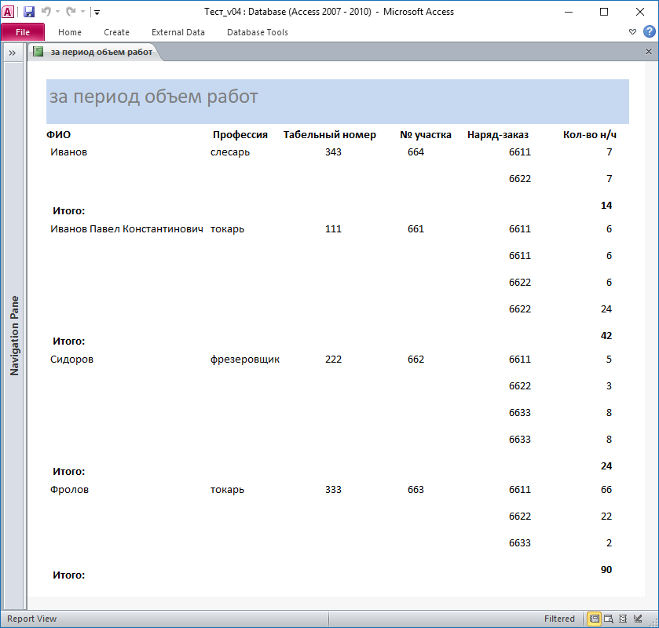

Довольно простой (и надеюсь понятный) пример вывода отчёта по диапазону дат.
Отчёт:

Код из примера:
Private Sub cbMonth_AfterUpdate()
If Me!cbMonth.ListIndex <> -1 Then 'Значение выбрано
'Первый день месяца
Me!От = DateSerial(Me!cbYear, Me!cbMonth, 1)
'Последний день месяца = 'Месяц + 1, а Аргумент ДЕНЬ = 0!!!
Me!До = DateSerial(Me!cbYear, Me!cbMonth + 1, 0)
Else
Me!От = Null
Me!До = Null
End If
End Sub
Private Sub cbYear_AfterUpdate()
'Обработка смены месяца = установка дат С и ДО с учётом года
cbMonth_AfterUpdate
End Sub
Private Sub cmdReport_Click()
Dim sFilter$
'Фильтр для отчёта по датам ...
sFilter = "Дата Between " & _
Format$(Nz(Me!От, 0), "\#mm\/dd\/yyyy\#") & _
" And " & _
Format$(Nz(Me!До, 999999), "\#mm\/dd\/yyyy\#") ' На Null = #11/25/4637#
DoCmd.OpenReport "Объем Работ - За Период", acViewReport, "", sFilter
Me.Visible = False 'скрываем форму на время просмотра отчёта (опционально)
End Sub
Private Sub Form_Current()
'--------------------------------------------------------------------------
Dim v As Variant
On Error GoTo Form_Current_Err
v = DLast("Дата", "Работы") ' Берём последнюю дату из базовой для отчёта таблицы
If IsDate(v) = True Then
Me!cbYear = Year(v) 'Установка года
Me!cbMonth = Month(v) 'Установка месяца
cbMonth_AfterUpdate 'Обработка смены месяца = установка дат С и ДО с учётом года
End If
Form_Current_Bye:
Exit Sub
Form_Current_Err:
'MsgBox "Error: " & Err.Number & vbCrLf & Err.Description & vbCrLf & _
"in Sub: Form_Current in module: Form_Объем работ за период", _
vbCritical, "Error in Application: " & Err.Source
Err.Clear
Resume Form_Current_Bye
End Sub
В отчёте:
Private Sub Report_Close()
On Error Resume Next
'Возвращаем видимость формы (опционально)
Forms("Объем работ за период").Visible = True
Err.Clear
End Sub

MSA-2010 ( 90 kB) Пример